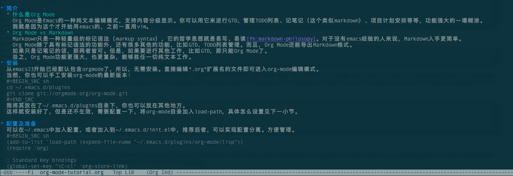

Org Mode是Emacs的一种纯文本编辑模式，支持内容分级显示。你可以用它来进行GTD、管理TODO列表、记笔记（这个类似markdown）、项目计划安排等等，功能强大的一塌糊涂。 我就是因为这个才开始用emacs的，之前一直用vim。
Markdown只是一种轻量级的标记语法（markup syntax），它的哲学思想就是易写、易读1。对于没有emacs经验的人来说，Markdown入手更简单。 Org Mode除了具有标记语法的功能外，还有很多其他的功能，比如GTD、TODO列表管理。而且，Org Mode还能导出Markdown格式。 如果只是记笔记的话，那两者皆可。但是，如果要进行其他工作，比如GTD，那只能Org Mode了。 总之，Org Mode功能更强大，也更复杂，能够胜任一切纯文本工作。
从emacs23开始已经默认包含orgmode了，所以，无需安装。直接编辑*.org*扩展名的文件即可进入org-mode编辑模式。 当然，你也可以手工安装org-mode的最新版本：
cd ~/.emacs.d/plugins
git clone git://orgmode.org/org-mode.git
我将其放在了~/.emacs.d/plugins目录下，你也可以放在其他地方。 这样就安装好了，但是还不生效，需要配置一下，将org-mode目录加入load-path，具体怎么设置见下一小节。
可以在~/.emacs中加入配置，或者加入到~/.emacs.d/init.el中，推荐后者，可以实现配置分离。方便管理。
(add-to-list 'load-path (expand-file-name "~/.emacs.d/plugins/org-mode/lisp")) (require 'org) ; Standard key bindings (global-set-key "\C-cl" 'org-store-link) (global-set-key "\C-ca" 'org-agenda) (global-set-key "\C-cc" 'org-capture) (global-set-key "\C-cb" 'org-iswitchb)
好了，现在可以开始org mode之旅了。
emacs hello.org
执行上面命令后的截图如下所示，这就是本文的org文件，如果用过Markdown的，看着应该很亲切吧！ 
Org Mode使用 * 标识章节标题，一个 * 表示一级标题，二个星号 ** 表示二级标题，以此类推。 注意：星号后面需要有空格。
* 标题一
** 标题二
*** 标题三
不同层级以不同颜色标注。常用的快捷键：
| 快捷键 | 说明 |
|---|---|
| S-tab | 展开、折叠所有章节 |
| Tab | 展开、折叠光标所在章节 |
| M-left/right | 升/降标题 |
Org Mode可以很方便的对文字进行加粗、加斜等操作：
| 语法 | 效果 |
|---|---|
*粗体* |
粗体 |
/斜体/ |
斜体 |
+删除线+ |
|
_下划线_ |
下划线 |
~等宽字~ |
等宽字 |
注意：如果在中文的句子中设置字体，两边必须有空格才行。
可以使用等号转义字符，例如： =*不是粗体*= 将显示成 *不是粗体*
Org Mode支持多种超链接，包括内部链接、外部链接、图片、email等。 链接的格式如下：
[[链接地址][链接描述]] [[链接地址]]
当在Org Mode下输入链接时，当输入最后一个括号后，会显示成最终链接的形式，输入 C-c C-l 即可编辑。
内部链接就是当前文件不同位置之间的链接，它类似html的锚点。使用内部链接，需要首先定义一个跳转的目标：
<<跳转目标>>
然后就可以定义一个链接，这个链接可以跳转到上面定义的目标：
[[跳转目标]] 或者 [[跳转目标][描述]]
外部链接跳转到本文档之外，比如url、文件、新闻组、邮件等等。
| 链接格式 | 说明 |
|---|---|
http://www.google.com |
链接到网页 |
file:/home/smashell/images/a.png |
连接到文件 |
/home/smashell/images/a.png |
同上 |
file:project.org |
链接到其他org文件 |
mailto;adnet@galaxy.net |
链接到新闻组 |
irc:/irc.com/#emacs/bob |
链接到irc |
更多说明参考官方文档2
| 快捷键 | 说明 |
|---|---|
| C-c C-l | 创建或修改链接 |
| C-c C-o | 打开链接 |
Org Mode提供了方便的表格操作，还提供了类似Excel的表格函数，可以完成简单的运算。 创建表格很简单，首先输入表头信息：
|编号|名称|说明|
然后在表头的末尾按tab键，则自动插入一行：
| 编号 | 名称 | 说明 | | | | |
如果想要表头有底色，则在第二行输入“|-”，然后按tab键即可：
| 编号 | 名称 | 说明 | |------+------+------| | | | |
在表格插入数据的时候，按Tab键跳到下一个单元格，按Enter键跳到下一行的单元格。如果想要往回跳，同时按着shift键即可。
| 名称 | num1 | num2 | total | |-------+------+------+-------| | item1 | 12 | 3 | | | item2 | 5 | 20 | | | item3 | 7 | 10 | |
然后在total列的任意一行中输入 =$2+$3 ，然后按 C-u C-c C-c ，铛铛~~，表格自动计算第二列和第三列的结果：
| 名称 | num1 | num2 | total | |-------+------+------+-------| | item1 | 12 | 3 | 15 | | item2 | 5 | 20 | 25 | | item3 | 7 | 10 | 17 |
| 快捷键 | 说明 |
|---|---|
| C-c C-c | 自动对齐表格 |
| Tab | 跳到下一个单元格 |
| S-Tab | 跳到上一个单元格 |
| Enter | 跳到下方的单元格 |
| S-Enter | 跳到上方的单元格 |
| M-方向键 | 移动行/列 |
脚注可以看成是一种特殊的内部链接，但是有自己的语法格式。下面是插入一个脚注：
[fn:footprint1]或者[fn:数字]
然后在文档的最下方插入：
[fn:footprint1] this is a link: http://orgmode.org
Org格式的文件编辑起来很方便，但是看起来就没那么直观了。幸好，Org Mode提供了丰富的导出功能，比如导出html、pdf等。导出pdf需要LaTeX的支持，需要系统安装想要的LaTeX包。 而导出html就方便很多，要想导出，直接执行 C-c C-e ，然后会列出一堆可导出的格式，按相应的字母选择即可。
markdown philosopy: http://daringfireball.net/projects/markdown/syntax#philosophy
External links: http://higrid.net/c-art-orgmode_basic.htm#sec-2